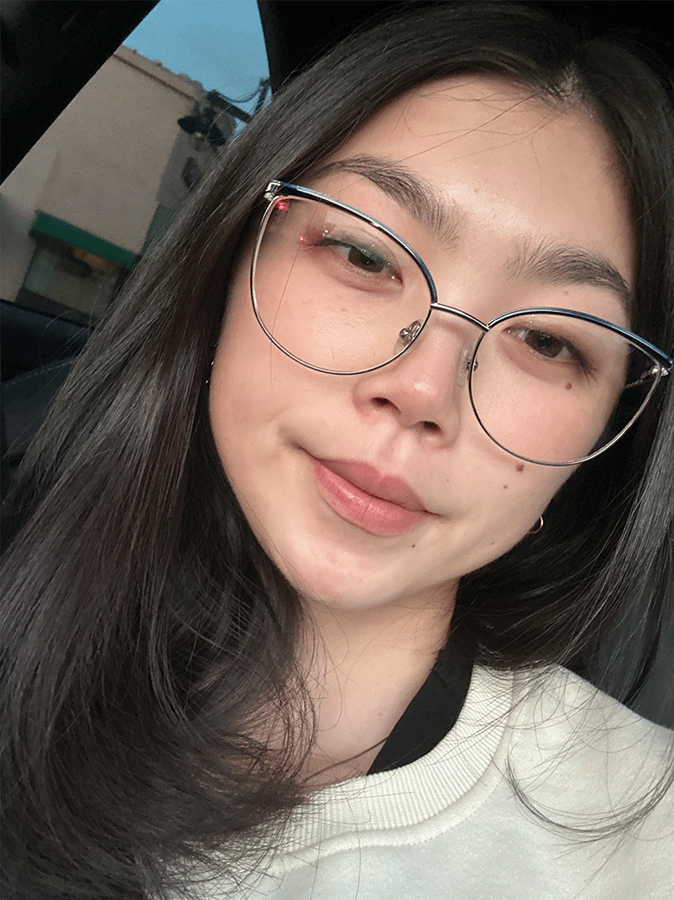

Sophia Deng
Hi, my name is Sophia Deng and my pronouns are she/her. I love staying home to relax and to play games with my friends. The types of games I pay is a mixture of FPS and farming simulation games, like, Overwatch, Valorant, Minecraft, and Stardew Valley. A hobby I picked up over the pandemic was crocheting and that's something I really enjoy doing. I love the different patterns I could make and practice to perfect my craft, which is what I'm currently trrying to do with graphic design. I have always loved doing anything art related, which is why I wanted to choose an artistic path that I would enjoy doing. I want to be able to learn more skills so that I'm able to create work that'll inspire not only other people, but also myself. I think the biggest challenge for me is going to be coding just becuase I'm not the best with technology, but overall, I'm excited to learn new skills and hone them. Fun fact about me is that I could eat fruits and chips any day and any time.